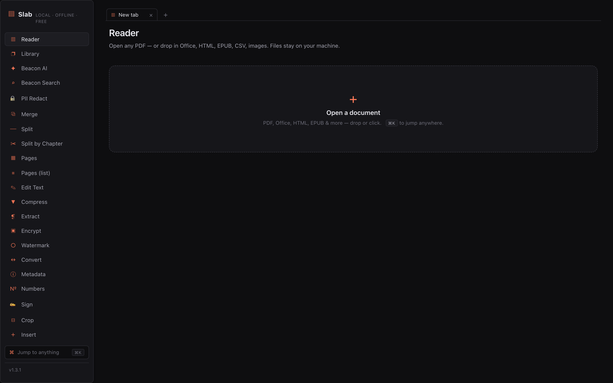
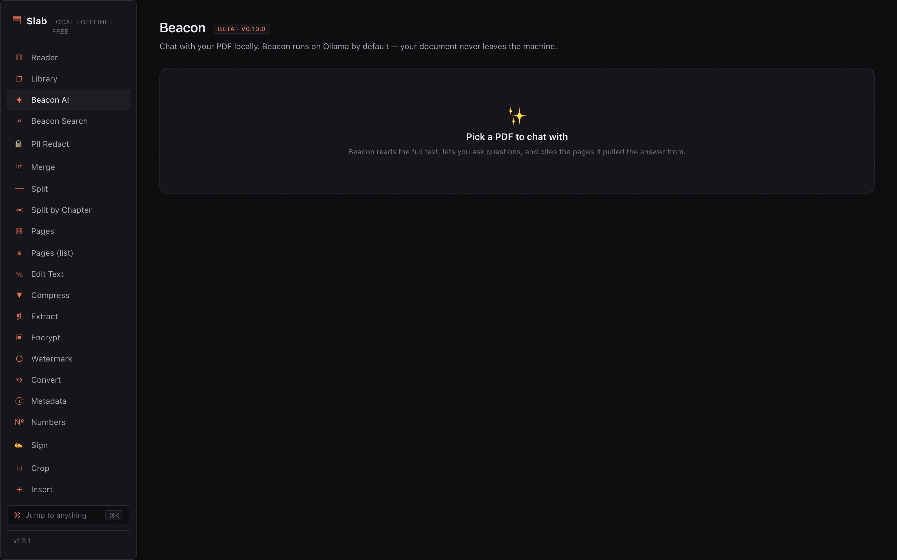
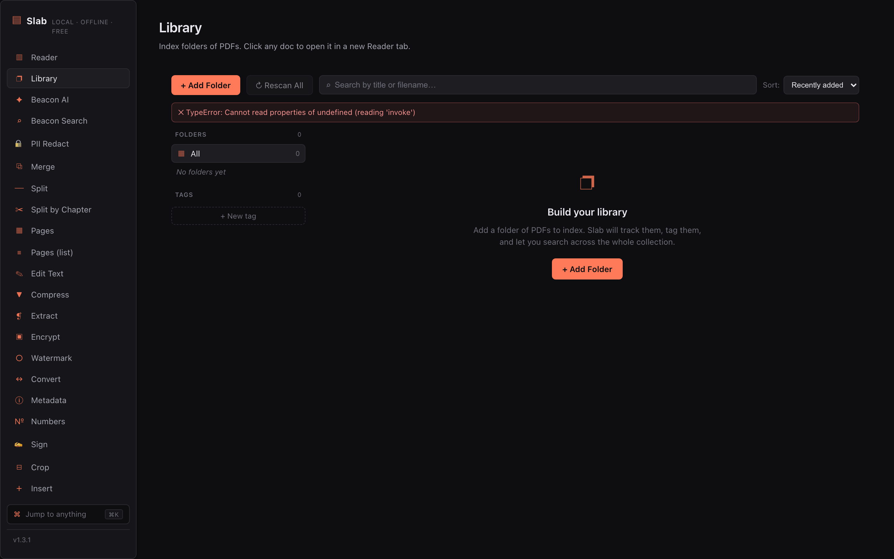
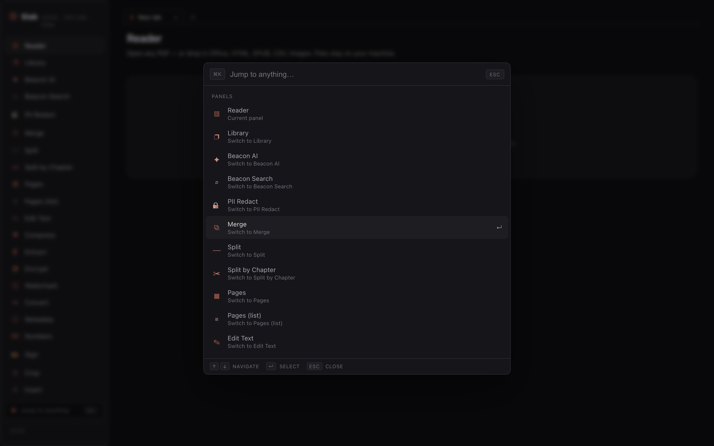
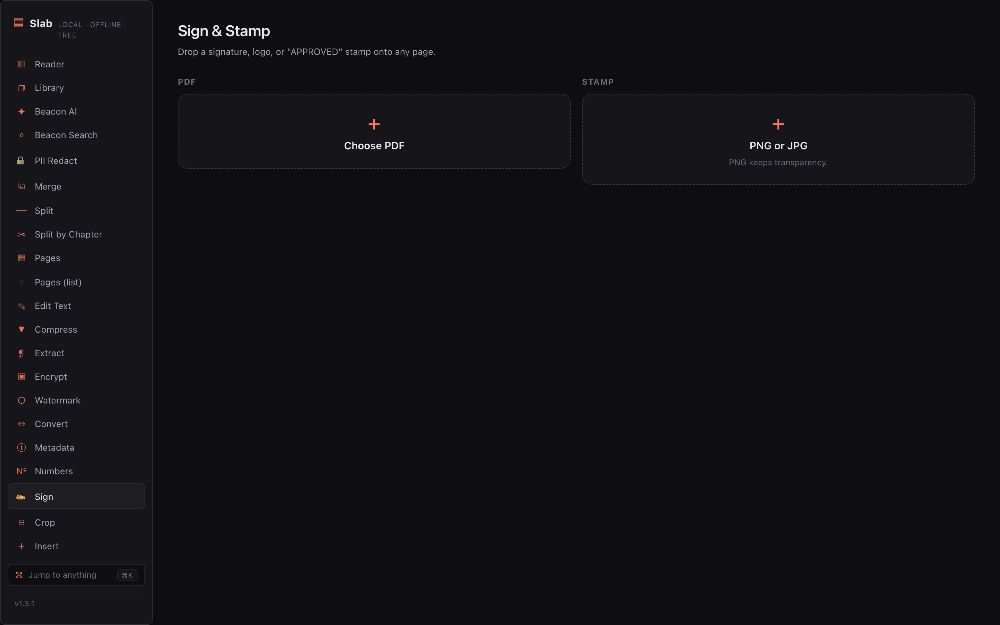
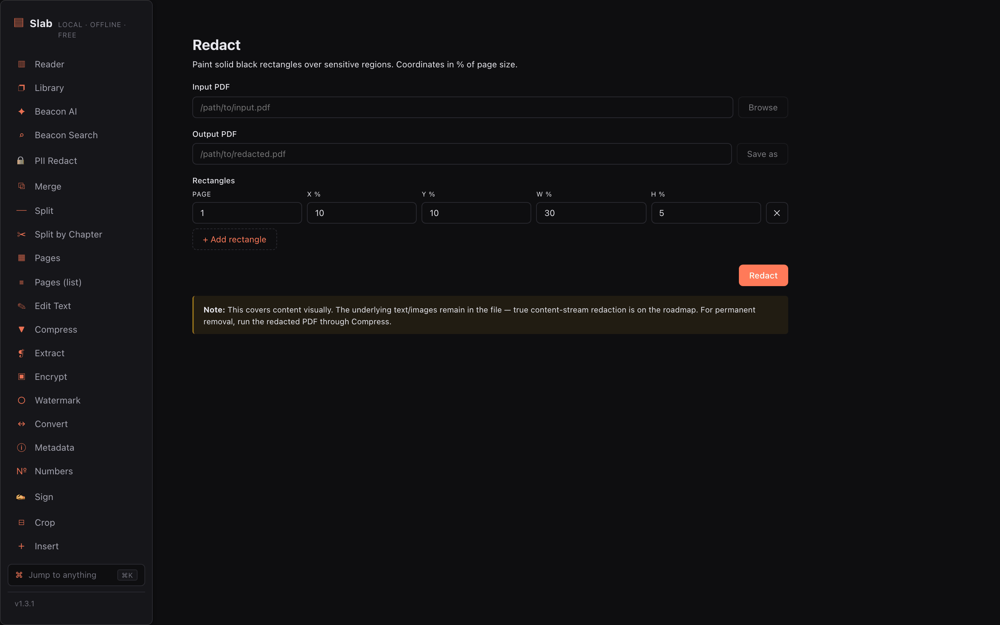

macOS
Apple Silicon & Intel
v3.39.0 — Inspector Tags · Free & open source · GPL-3.0
Most PDF software today is a subscription wrapped around an upload button. Slab is the opposite: a fast, free PDF app for macOS, Windows, and Linux that runs entirely on your machine. No accounts. No uploads. No cloud round-trips.

Index of features
Built because every PDF app wanted my files and my credit card. Hit ⌘K from anywhere to jump to any tool — everything below runs on your device, and air-gapping a laptop changes nothing.
Thumbnails, outline, find, highlights, sticky notes, recents. The basics, done right.
Merge, split, compress, extract, encrypt, watermark, sign, crop, redact, N-up. Merging a hundred files takes a second, not a minute.
Markdown→PDF, .docx/.xlsx/.epub conversion, flatten, sanitize, repair, edit text, grayscale, page labels.
Tesseract OCR with a batch queue, table extraction, language packs — plus vision Q&A in Beacon.
Chat, summaries, semantic search, PII redaction. On-device only — no API keys, no cloud.
A real library with folders and tags, line-level diff, presenter mode, detachable panels.
Vim mode for the faithful, a WCAG-level accessibility pass, i18n groundwork.
Declarative plugins — themes, commands, AI providers, PDF actions — without writing Rust. Signed marketplace included.
Beacon
Eleven features — chat, summaries, semantic search, PII redaction, study mode, voice — running on your machine by default. No API keys, no usage limits. Pull the ethernet cable and everything still works.
Chat answers with citations pointing back to exact pages. Voice Mode pairs on-device TTS with speech-to-text.

Hopper
Point Hopper at a folder — ~/Downloads, a scanner, a shared inbox — and attach a recipe. Incoming PDFs get flattened, OCR’d, redacted, watermarked, renamed by Beacon, and filed. A live log shows every run. ⇧⌘H to open it.
Route each arriving PDF through a chain of rules you write once and forget. Six predicate kinds — first match wins, everything else falls through.
As you edit any predicate, green ✓ chips light up next to your actual recent files showing which rule will catch them. No deploy-test-squint loops.
Hazel is $42 and can’t read PDFs. Adobe’s version needs an enterprise license and phones home. Hopper is free and local.
Slab Server
Same Rust engine, headless: an HTTP API plus a drag-and-drop web UI in an 80 MB Docker image. Compose file and docs included — sits behind a reverse proxy without complaint.
80 MB image at ghcr.io/sanjays2402/slab · full HTTP API · Compose example in docs/server.md
Foundry + Bench
Declare a theme, a locale, a command, an AI provider — no Rust required. A typed TypeScript SDK ships three working examples inside the app, so you can take the system apart on day one. Bench is the signed marketplace.
Screenshots




The comparison
| Slab | Adobe Acrobat | Hazel | |
|---|---|---|---|
| Price | Free, GPL-3.0 | Subscription | $42 |
| Files stay on your machine | Yes | Cloud round-trips | Yes |
| Offline AI inside PDFs | Yes, on-device | — | Can’t read PDFs |
| Watched-folder PDF automation | Hopper, free | Enterprise license | Rules, no PDF content |
| 30+ PDF operations | Yes | Yes | — |
| Plugin marketplace | Foundry, signed | — | — |
| Telemetry | None | Yes | None |
Prices as publicly listed.
Download
Latest release: v3.39.0 — Inspector Tags. GPL-3.0, no Pro tier, no upsells, no telemetry. Release notes →
Apple Silicon & Intel
Installer & MSI
AppImage & Debian
Self-host Slab Server